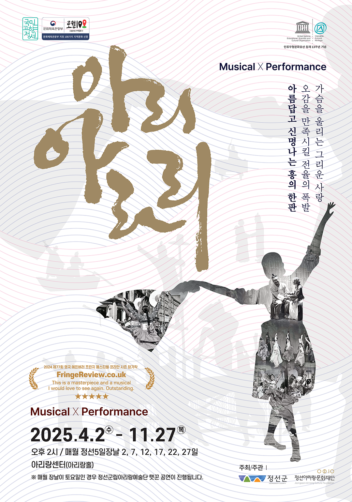
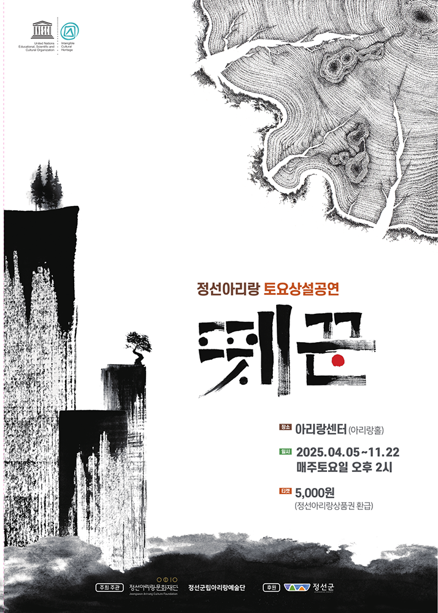
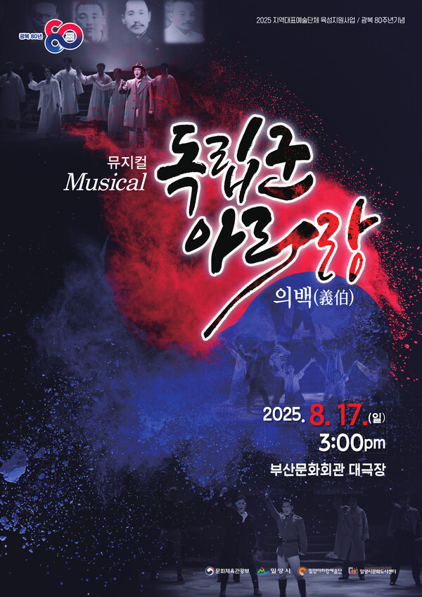

공연정보
-

-

-

아리랑 박물관 오시는길
- 주소
- 강원 정선군 정선읍 애산로 51
- 운영시간* 매주 월요일 정기휴무
- 오전 09:00 ~ 오후 18:00
- (휴게시간 - 12:00 ~ 13:00)
- 전화번호
- 033-560-5031
한국 문화를 상징하는 민요이자 노래입니다.
'아리랑'이라는 제목으로 전승된 민요는

두번째 애국가와 다를 바 없는 노래입니다.
2002년 대한민국 축구 국가대표팀 응원가로 채택된것을 시작으로 월드컵, 올림픽, 아시안게임등의 스포츠경기에서 민족의 자긍심을 느끼게 해준 중요한 역할을 해왔습니다.

아리랑의 어원과 의미는 대표적인 여러 가지 이야기로 의미를 가집니다.
아리랑 아리랑 아라리요 아리랑 고개로 넘어간다 아릿아릿 아릿아릿 (속)앓이요 아릿아릿 고개로 넘어간다
아리랑은 '알이랑'이라는 말이고, 알처럼 고운 님과 함께라는 뜻입니다. 사람중에 알짜 즉, 처녀와 총각을 의미하며 그들을 알이나 구슬이라 불렀습니다. 알이알이(아리아리) (구)슬이(구)슬이(쓰리쓰리) 어울려 놀다 보면 남녀 한 쌍의 알알이가 나게 되고 알알이는 애틋한 사랑을 나누기 어려워서, 알이랑 손잡고 고개를 넘어 오붓한 시간을 갖는다는 의미입니다.
지역만의 고유하거나 현대로 넘어와서 다양하게 적용된 아리랑을 소개합니다.

경기아리랑본조 아리랑
나운규가 작사 작곡한 아리랑 이전에, 경기 지역에서 구전된 아리랑으로, 위상이 높아 본조 아리랑이라 부르며 통상 구(舊)아리랑이라 부른다.밀양아리랑인지도가 높은 아리랑
경상남도 밀양에서 발생한 통속민요 아리랑으로, 다양한 대중매체에서 알려져 대중에게 인지도가 높은 음율이 특징이다.정선아리랑가장 오래된 아리랑
영서,영동지방에 분포되어 옛부터 전해져 내려오고 있는 아리랑으로, 널리 불리어지기 시작한 것은 약 600여년전인 조선 초기라 전해진다.
아리랑by N.EX.T
1997년 발매된 록 밴드 N.EX.T의 싱글앨범의 수록곡으로, 동계유니버시아드 폐막식 음악으로 사용이 되었다.아리랑 변주곡by George Winston
세계적인 피아니스트 조지윈스턴이 애정을 가지고 만든 뉴에이지 변주곡으로 서정적인 느낌의 피아노 변주곡이다.아리랑by 평창올림픽
2018년 평창 동계올림픽&패럴림픽의 방송 인트로 배경음악으로 올림픽 공영방송 OBS의 평창올림픽 인트로 곡으로 사용되었다.한국의 정서가 담긴 아리랑, 이제 세계인의 마음에도 울려 퍼집니다.